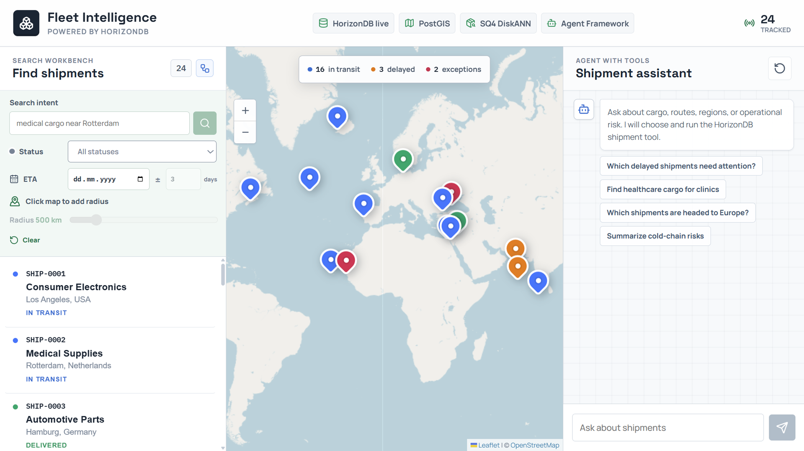
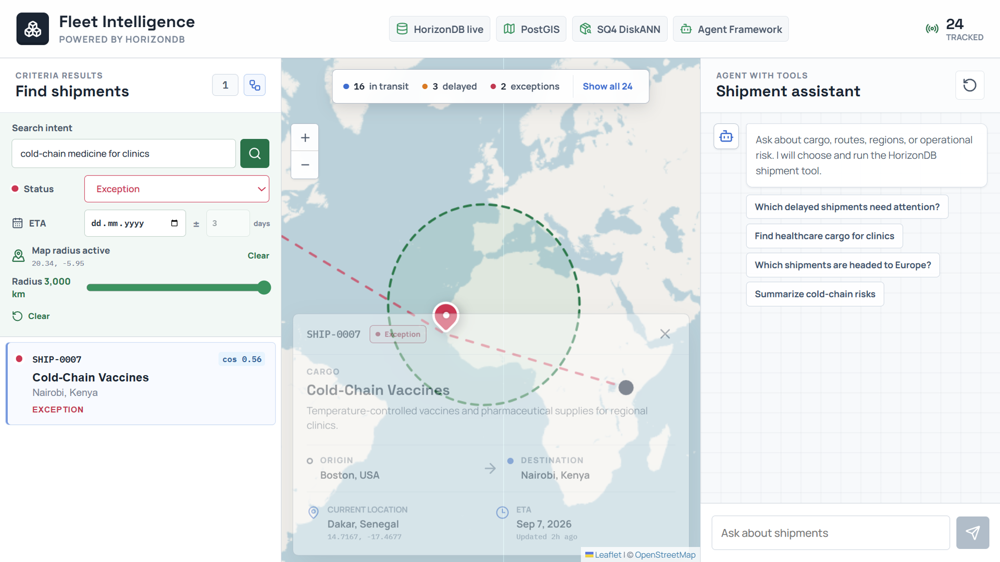
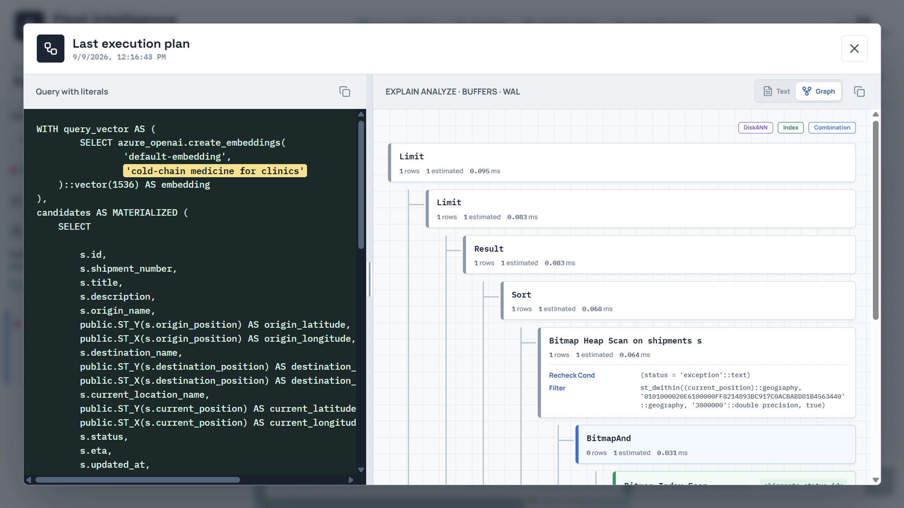
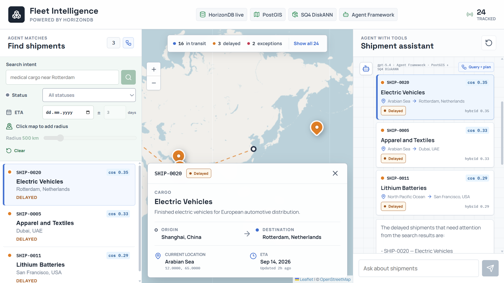
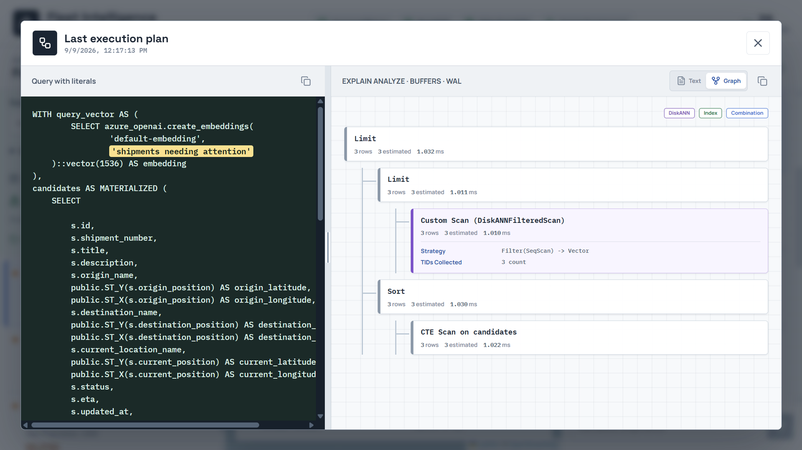

Customer technical demo
HorizonDB Fleet Intelligence
Spatial operations, spherical-quantized vector search, and a tool-driven gpt-5.4 agent over one operational data store.
Agenda
From customer problem to inspectable execution
A concise path through the scenario, architecture, live application, query plans, and implementation.
Why this sample
Location alone does not answer an operations question
Operators need to combine where an asset is with what it carries, its current condition, and the intent behind a request.
B2B shipment tracking
Find cargo by route, status, ETA, proximity, and semantic description without moving operational data.
Bus and taxi dispatch
Rank available units by service intent and geographic reach, then inspect the evidence behind the recommendation.
Security response
Ground dispatch decisions in current position, service area, incident meaning, and live operational state.
Two paths, one repository
Keep deterministic search separate from agent reasoning
Left: criteria workbench
POST /api/searchPrompt, status, ETA, center, and radius are explicit operator inputs.
Right: gpt-5.4 agent
POST /api/chatOnly a natural-language prompt. Agent Framework chooses tool arguments.
FastAPI + Microsoft Agent Framework
Both paths call the same async Psycopg repository. The agent must invoke one typed search_shipments tool before answering.
Azure HorizonDB
Relational truth, PostGIS geometry, vector embeddings, SQ DiskANN retrieval, model registry, and gpt-5.4 inference stay behind one database connection.
One operational database
Every HorizonDB feature used in the sample
| Capability | Concrete implementation | Role in the workflow |
|---|---|---|
| PostGIS | geometry(Point, 4326), GiST, ST_DWithin | Stores routes and current positions; applies map-selected radius filters. |
| azure_ai model registry | default-embedding, default-chat | Resolves text-embedding-3-small and gpt-5.4 behind the database connection. |
| pgvector | vector(1536), cosine <=> | Represents cargo meaning and exposes cosine similarity as evidence. |
| DiskANN | spherical_quantized=true, sq_bits=4 | Accelerates nearest-neighbor retrieval with 25,000 SQ training samples. |
| PostgreSQL indexes | status + ETA B-tree, bitmap combination | Lets the planner choose selective relational filters before spatial/vector work. |
| azure_ai.generate | gpt-5.4 tool plan + grounded answer | Powers the Agent Framework model turns without a second application credential. |
Ask, filter, locate, and inspect
The next five views were captured from the running React + Vite application against live HorizonDB.
One operations console, two distinct entry points
Live HorizonDB / PostGIS / SQ4 DiskANN / Agent Framework

Criteria search isolates a live cold-chain exception
Exception status + 3,000 km radius + semantic intent

The planner uses the selective criteria first
EXPLAIN ANALYZE / BUFFERS / WAL

The agent receives only the operator's question
Microsoft Agent Framework + gpt-5.4

SQ DiskANN serves the agent's semantic tool call
Custom Scan (DiskANNFilteredScan)

React to FastAPI
Two UI paths become two enforceable API contracts
Criteria search
frontend/src/api.ts + backend/app/models.py
searchShipments(query, status, spatial) -> POST /api/search { query, status, eta_date, eta_days, location, radius_km } class SearchRequest: status: ShipmentStatus | None eta_date: date | None location: Coordinate | None validate: location pairs with radius validate: eta_date pairs with eta_days
Agent conversation
frontend/src/api.ts + backend/app/models.py
chatWithAgent(query) -> POST /api/chat { query } class AgentRequest: model_config = ConfigDict( extra="forbid" ) query: str limit: int = 8 status in request -> HTTP 422
Microsoft Agent Framework
Framework-controlled tools, HorizonDB-controlled inference
Plan the tool call
The custom chat client asks azure_ai.generate for JSON arguments matching the tool schema.
Invoke exactly once
Agent Framework validates arguments and calls the local search_shipments function.
Answer from evidence
The second model turn receives only the function result rows and writes the grounded answer.
@tool( name="search_shipments", max_invocations=1, ) async def search_shipments( query_text: str, status_filter: StatusArgument = "all", ): rows = await repository.semantic_search(...) return shipment_tool_payload(rows)
class HorizonDBChatClient( FunctionInvocationLayer, RawHorizonDBChatClient, ): configuration = { "max_iterations": 2, "max_function_calls": 1, } service_url = "horizondb://azure_ai"
Shared repository
One parameterized query; PostgreSQL chooses the access path
WITH query_vector AS ( SELECT azure_openai.create_embeddings( %s, %s )::vector(1536) AS embedding ), candidates AS MATERIALIZED ( SELECT s.*, s.embedding <=> query_vector.embedding AS vector_distance, ST_Distance(...) / 1000 AS distance_km FROM horizon_ship.shipments AS s CROSS JOIN query_vector WHERE (%s IS NULL OR s.status = %s) AND (%s IS NULL OR s.eta BETWEEN ...) AND (%s IS NULL OR ST_DWithin(...)) ORDER BY s.embedding <=> query_vector.embedding LIMIT 100 ) SELECT *, 0.72 * (1 - vector_distance) + 0.28 * spatial_score AS hybrid_score FROM candidates ORDER BY hybrid_score DESC;
Explicit criteria
BitmapAndshipments_status_idx+ geography GiSTHighly selective relational and PostGIS predicates win for one row.
Agent semantic search
DiskANNFilteredScanFilter(SeqScan) -> VectorTIDs Collected: 3Strict iterative search preserves filtered nearest-neighbor ordering.
From schema to Azure
Idempotent setup turns the sample into a repeatable deployment
azd up provisions native HorizonDB, ACR, and separate API and React Container Apps.CREATE INDEX ... USING diskann (embedding vector_cosine_ops) WITH ( spherical_quantized = true, sq_bits = 4, sq_training_samples = 25000 ); SET LOCAL diskann.iterative_search TO 'strict_order';
azd up
-> Microsoft.HorizonDb/clusters
-> parameter group approves extensions
-> Container Apps: API + React UI
postdeploy health requires:
gpt-5.4 + Agent Framework
spherical quantization = true
sq_bits = 4
training samples = 25000
Reusable operational pattern
One database, two trustworthy ways to ask
HorizonDB combines relational truth, PostGIS, vector retrieval, spherical quantization, and managed model inference without duplicating operational data across specialized stores.